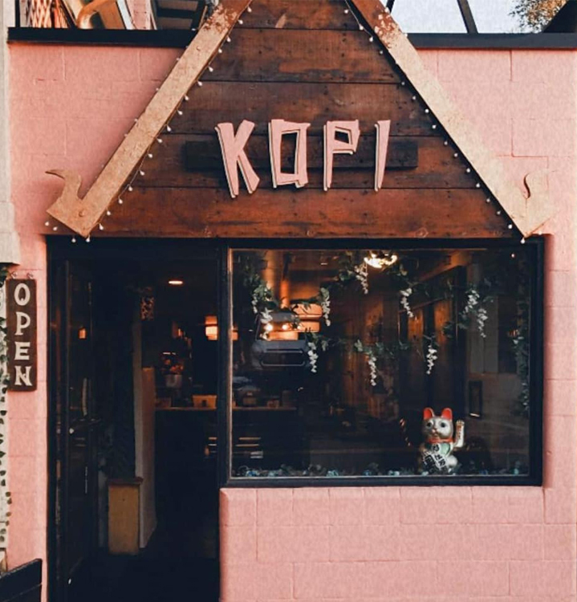

Exceptional Coffee From
Southeast Asia
Enjoy unique flavors and fresh pastries at our Portland Coffee house!


At Kopi, we add to the rich tapestry of our city by being the only place you’ll find South East Asia’s best coffee. Here we exclusively serve Small Farm Coffee from Thailand, Myanmar, Vietnam, India and small farms from the many islands of the Indonesian archipelago.
Jahe (ginger) is an essential element at Kopi.
The ginger root is enjoyed with coffee in various forms throught Indonesia. In Java, black coffee is often poured straight onto a freshly smashed piece of ginger. Farther East in Flores, Kopi Jahe is served with large amounts of Gula Jawa, a thick palm sugar used in Indonesian cuisine. In the Muluku Islands, Spicy Kopi Jahe is served as a health tonic with various local spices such as nutmeg, cloves, and chilis.
Try one of our many drinks featuring ginger for an adventuous coffee experience that you will love! Try our Kopi Jahe, Indonesian Iced Coffee, Jahe Latte, or our Ginger Americano at our Portland coffee house.